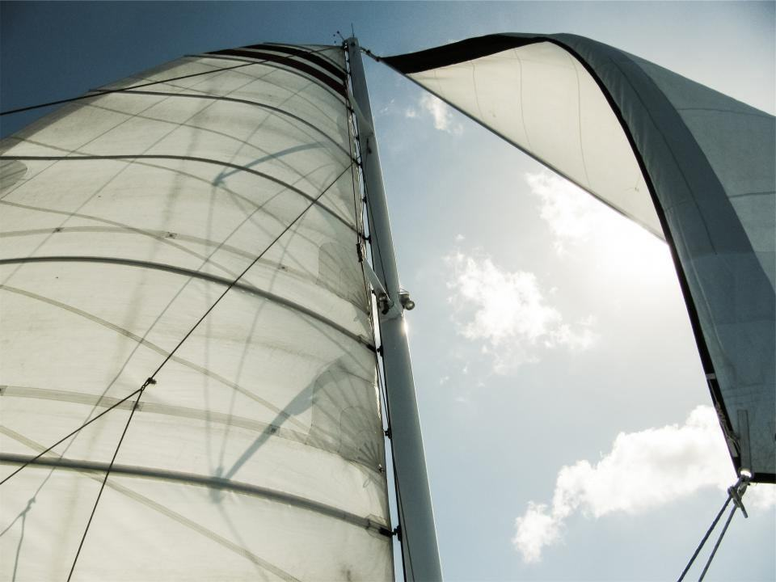
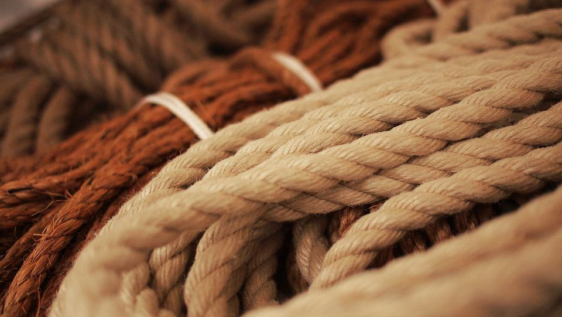
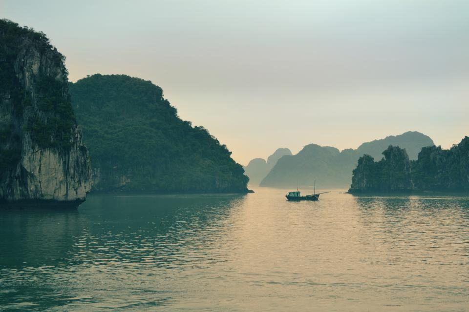

Tjänster
I dag tillverkar vi 60–70 båtar per år i en fabrik på 6 200 kvadratmeter vid Gamlebyviken. Av de 64 anställda arbetar 38 i produktionen, 14 i serviceavdelningen och resten med konstruktion, försäljning och reservdelar. Ungefär hälften av båtarna går på export till Norge, Finland och Danmark.
Vad ska båten användas till?

Räddning och myndigheter
Våra räddningsribbar har självresande skrov, värmda förarplatser och plats för en bår längs mittkonsolen. Över 200 räddningstjänster, sjöräddningsstationer och kustkommuner i Norden kör båtar från oss.
Båtarna byggs enligt Transportstyrelsens regler för fartyg och typgodkänns vid behov.

Vindkraft och offshore
Tekniker som åker 20 sjömil ut till en vindkraftspark behöver sitta stilla. Vi bygger transportbåtar med stötdämpade säten, förstärkt för med dämpfender och plats för verktygslådor.
Tolv båtar levererade till parkerna i Kalmarsund och Bottenviken sedan 2020.

Fritid
Fritidsserien bygger på samma skrov som räddningsbåtarna men med dynor, kapell och större tank. Båtarna säljs genom sju återförsäljare och direkt från fabriken.
Provturer från fabrikens brygga i Gamlebyviken från april till oktober.

Service och tuber
En tub håller i 10–15 år. Vi byter tuber på alla märken, renoverar skrov och gör årsservice på motorer och elektronik – i fabriken eller hos kunden.
Ett serviceavtal ger fast pris och förtur vid haveri.
Fyra steg till en färdig ribbåt
- 1

Behovsanalys
Vi åker till er, provkör er nuvarande båt och går igenom uppdrag, besättning och farvatten.
- 2

Konstruktion och offert
Konstruktörerna anpassar en modell och ni får ritning, specifikation och fast pris.
- 3

Tillverkning
Byggtiden är 14–22 veckor. Ni bjuds in till skrovbesiktning och slutkontroll.
- 4

Leverans och utbildning
Båten levereras med två dagars förarutbildning och första årets service.
Certifierad tillverkning
- ISO 9001-certifieradeCertifierat kvalitetsledningssystem för konstruktion, tillverkning och service sedan 2009.
- CE-märkningFritidsbåtarna är CE-märkta enligt fritidsbåtsdirektivet i kategori B och C.
- Svetscertifikat EN ISO 9606-2Våra svetsare är certifierade för aluminiumsvetsning av skrov.
- TeknikavtaletAlla anställda i Sverige omfattas av Teknikavtalet med IF Metall och Unionen.